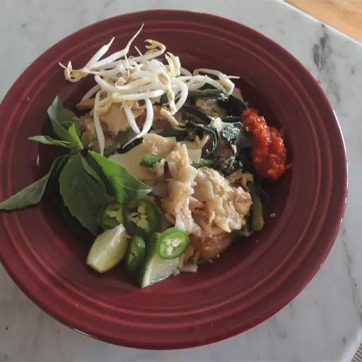

Pad See Ew Recipe

What is Pad See Ew?
Pad see ew is a stir-fried noodle dish that is commonly eaten in Thailand.
It can be found easily among street food vendors and is also quite popular
in Thai restaurants around the world. The origins of the dish can be traced
to China, from where the noodle stir-frying technique was brought.
Ingredients List
- 1 (8 ounce) package wide rice noodles
- 1 cup bite size broccoli pieces
- 1 tablespoon vegetable oil
- 1 teaspoon crushed garlic
- ½ pound rib-eye steak, sliced thin
- ½ cup water
- 1 tablespoon cornstarch
- 3 tablespoons oyster sauce
- 3 tablespoons soy sauce
- 1 tablespoon fish sauce
- 1 tablespoon white sugar
- 1 pinch salt and ground black pepper to taste
- 1 egg
Instructions
-
Place the dry rice noodles in a bowl, cover with hot water, and let soak until white and soft but not mushy, about 10 minutes. Drain and set aside.
-
Bring a small pot of water to a boil; cook the broccoli in the boiling water until cooked and still firm, 5 to 7 minutes. Drain and set aside.
-
Heat the oil in a skillet over medium heat; cook the garlic in the hot oil until fragrant, 3 to 5 minutes. Stir in the sliced steak; cover the
skillet and cook until the meat is just turning from pink to grey, 5 to 7 minutes. Whisk the water and cornstarch together in a bowl; pour into
the skillet along with the oyster sauce, soy sauce, fish sauce, and sugar. Add the rice noodles and broccoli and stir to mix evenly. Season with
salt and pepper. Allow the mixture to simmer while you prepare the egg.
-
Prepare a small skillet with cooking spray and heat over medium-low heat. Cook the egg in the prepared skillet until cooked through and the yolk
is solid. Add the cooked egg to the other skillet and stir to incorporate. Serve hot.
Home